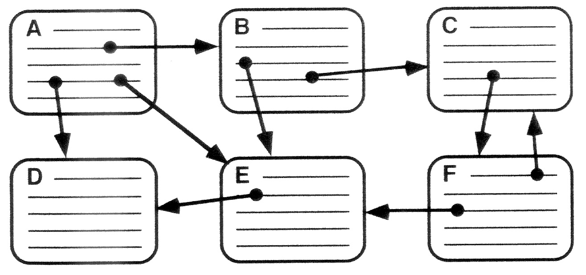

Hypertext is a text displayed on a computer or other electronic devices with references (hyperlinks) to other text that the reader can immediately access. Hypertext documents are interconnected by hyperlinks, which are typically activated by a mouse click, keypress set, or screen touch. Apart from text, the term “hypertext” is also sometimes used to describe tables, images, and other presentational content formats with integrated hyperlinks. Hypertext is one of the key underlying concepts of the World Wide Web, where Web pages are often written in the Hypertext Markup Language (HTML). As implemented on the Web, hypertext enables the easy-to-use publication of information over the Internet.

Download the picture: https://drive.google.com/file/d/1SdP7ZnqWL8qN5KZzfoZEawwFaAZGggVu/view?usp=sharing
“(...)'Hypertext' is a recent coinage. 'Hyper-' is used in the mathematical sense of extension and generality (as in 'hyperspace,' 'hypercube') rather than the medical sense of 'excessive' ('hyperactivity'). There is no implication about size — a hypertext could contain only 500 words or so. 'Hyper-' refers to structure and not size.”
— Theodor H. Nelson, Brief Words on the Hypertext 23 January 1967
The English prefix “hyper-” comes from the Greek prefix “ὑπερ-” and means “over” or “beyond”. It has a common origin with the prefix “super-” which comes from Latin. It signifies the overcoming of the previous linear constraints of written text.
Two men are generally credited with the invention of hypertext:
But all major histories of what we now call hypertext start in 1945, when Vannevar Bush wrote an article in The Atlantic Monthly called “As We May Think”, about a futuristic device he called a Memex. He described the device as an electromechanical desk linked to an extensive archive of microfilms, able to display books, writings, or any document from a library. The Memex would also be able to create 'trails' of linked and branching sets of pages, combining pages from the published microfilm library with personal annotations or additions captured on a microfilm recorder. “As We May Think” directly influenced and inspired Nelson and Engelbart, that is why the modern story of hypertext starts with the Memex.
Starting in 1963, Ted Nelson developed a model for creating and using linked content he called “hypertext” and “hypermedia” (first published reference 1965). Ted Nelson said in the 1960s that he began implementing a hypertext system he theorized, Project Xanadu. Still, his first and incomplete public release was finished much later, in 1998.
Douglas Engelbart independently began working on his NLS system in 1962 at Stanford Research Institute, although delays in obtaining funding, personnel, and equipment meant that its key features were not completed until 1968. In December of that year, Engelbart demonstrated a hypertext interface to the public for the first time.
The original article:https://en.wikipedia.org/wiki/Hypertext